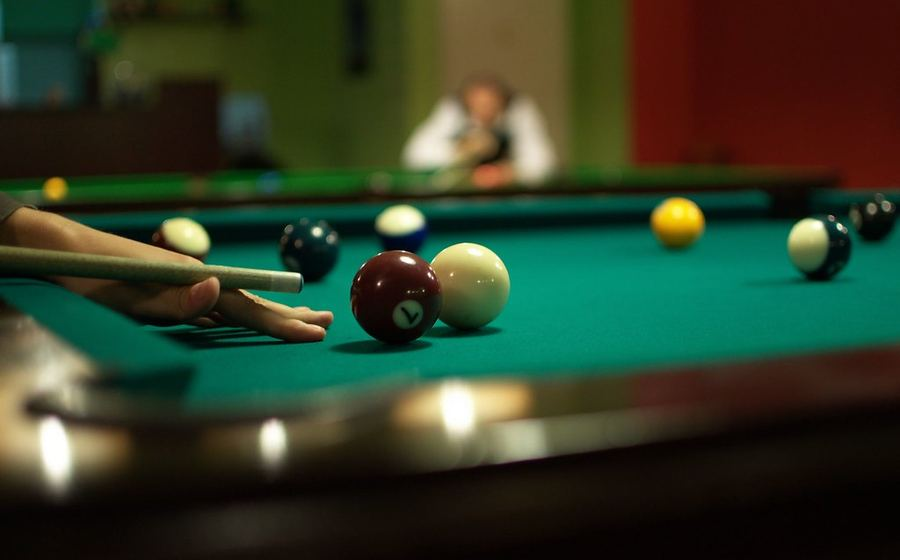

Bagi penonton baru yang mulai mengikuti liputan biliar di Nusantaratoto, dua format yang paling sering dipertandingkan di level nasional maupun internasional adalah 8-ball dan 9-ball. Meski sama-sama menggunakan meja dan bola biliar standar, keduanya memiliki aturan main yang cukup berbeda dan kerap membingungkan pemula. Artikel ini membahas perbedaan mendasar keduanya secara sederhana dan mudah dipahami.
Dalam format 8-ball, 15 bola nomor dibagi menjadi dua kelompok: bola solid (nomor 1-7) dan bola bergaris (nomor 9-15), ditambah satu bola nomor 8 sebagai bola penentu kemenangan. Setiap pemain harus terlebih dahulu menghabiskan seluruh bola dari kelompoknya sebelum diperbolehkan memasukkan bola nomor 8 ke lubang yang telah ditentukan. Kesalahan memasukkan bola 8 lebih awal dapat berujung pada kekalahan otomatis, sehingga strategi penempatan posisi bola menjadi sangat krusial.
Berbeda dengan 8-ball, format 9-ball hanya menggunakan sembilan bola bernomor 1 hingga 9 yang disusun dalam bentuk berlian. Aturan utamanya adalah pemain wajib menyentuh bola bernomor terendah yang masih ada di meja terlebih dahulu pada setiap pukulan, meskipun bola yang akhirnya masuk ke lubang boleh bola nomor berapa pun asalkan urutan sentuhan tetap benar. Pertandingan dimenangkan oleh pemain yang berhasil memasukkan bola nomor 9 secara sah, sehingga format ini cenderung lebih cepat dan dinamis dibanding 8-ball.
| Aspek | 8-Ball | 9-Ball |
|---|---|---|
| Jumlah bola nomor | 15 bola + bola 8 | 9 bola |
| Syarat menang | Habiskan kelompok, lalu bola 8 | Masukkan bola nomor 9 secara sah |
| Urutan pukulan | Bebas dalam kelompok sendiri | Wajib sentuh bola nomor terendah dulu |
| Durasi rata-rata rack | Relatif lebih lama | Cenderung lebih cepat |
Memahami perbedaan ini membantu penonton mengikuti jalannya pertandingan dengan lebih baik, termasuk saat menyimak rekap hasil Turnamen 9-Ball Nasional yang belakangan ramai diperbincangkan. Format 9-ball memang menjadi pilihan utama di sebagian besar turnamen kompetitif nasional karena tempo permainannya yang lebih cepat dan menarik untuk ditonton secara langsung maupun disiarkan.
Selain aturan main, ketertarikan publik pada biliar juga tak lepas dari sosok-sosok atlet yang konsisten berprestasi. Simak juga profil atlet biliar nasional yang telah mengharumkan nama Indonesia di kejuaraan tingkat Asia. Bagi pembaca yang tertarik pada disiplin permainan strategi lain, redaksi juga memiliki liputan mendalam seputar poker kompetitif yang sama-sama mengandalkan ketepatan perhitungan dan strategi.
Dengan memahami dasar-dasar ini, pembaca dapat menikmati liputan biliar Nusantaratoto secara lebih mendalam. Untuk informasi lebih lanjut mengenai redaksi kami, kunjungi halaman tentang kami.